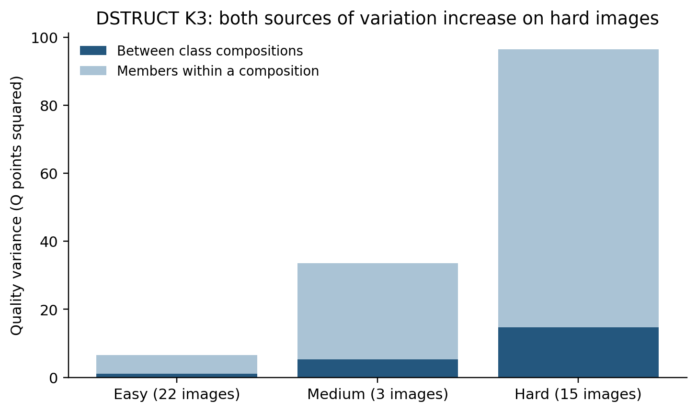

当前类别如何进入团队结果：DSTRUCT、RFUSE 与 JOINT 的现有证据整合
日期：2026-11-04。来源冻结提交：48a2fc6aedd51cd701b1bce06c02bd3ef92ec75b。本报告读取已保存端点、事件和统计，完成共同团队重聚合及解释；新增团队、融合、评分、分类拟合均为 0。
1. 核心判断
现有结果已经足以说明：类别比例、具体成员和共同背景分别改变融合结果；三种分类能够提供互补解释，无须为了补这一解释层重新选型或扩充团队。 最有用的补充是把同一研究对象上的质量、结构、位置尺度、劳动和输出状态放在一起，并让每项结论携带自己的支持范围。
- DSTRUCT 的作用已经进入团队质量与结构。 当前合法的 14 人换 7 人中，对称跨类变化平均比同类变化大 3.441 Q 分；50/69 张图为正。跨类方向的
C−B平均 +6.712 分、65/69 图为正。有限团队中，类别配比同时组织质量、转折、短墙段和劳动差异；同配比成员仍解释大部分波动。这几项结果共同支持“类别有解释作用”，并不要求每张图或每个指标都更敏感。严格 ABC、共同团队 - RFUSE 具有实际团队响应证据。 直接 AC 的 20/4 条件中，82 图有 77 图平均升 Q、5 图下降，均值 +2.934 分；同房 10/5 条件也出现跨类额外 Q 变化。它的贡献是把原答特点同融合响应联系起来，而不是把训练时使用的响应指标再次列出就算验证。直接 AC、同房严格 ABC
- JOINT 的平均方向接近零时，输出仍可能明显改变。 K3 的直接 20/10、训练 Q 秩 1→2，42 图升、40 图降，平均 +0.297 分，而平均绝对变化为 3.282 分。联合画像还组织了更多记录劳动波动，并且有明确的联盟方向和配比案例。这个结果适合解释人群混合的不确定性，不能压缩成“没有作用”。直接 AC、联盟及背景
- 困难图同时放大类别差异和成员差异。 DSTRUCT K3 的完整主目标有限面板中，简单图配比间 Q 方差为 1.081、配比内为 5.496；困难图分别为 14.758、81.682。困难图的方差占比没有明显升高，是因为两种差异都变大，不是因为类别差异消失。难度分层
- 当前需要补写的是上述解释及版本衔接。 已有 Q-only 五臂机会核对、AC 实际消费者补接、同房六端支持核对不在本报告中重新审计；原 Q/T 选队和旧策略也不重算。未来若要主张类别能指导进入顺序或分配劳动，再针对那项用途设计验证。当前研究口径
2. 本报告使用的类别与实验身份
| 体系 | 当前标签及解释位置 | 可直接接续的现有团队证据 | 版本边界 |
|---|---|---|---|
| DSTRUCT | TARGET_DSTRUCT_K3；K2 为粗层。采用 image_difficulty_20261030 的当前楼外标签 |
当前合法严格 ABC、当前同房、当前固定团队配比、更新完整联盟 | 直接 AC 的既有 TARGET 设计使用冻结标签。K3 有 34 个人员×楼外折标签与当前不同；不能把其全部结果重新命名为当前类别效应 |
| RFUSE | RFUSE_GEOM_K2；融合响应解释 |
当前固定团队配比、同房严格 ABC/配比分解；既有直接 AC、完整联盟、固定块背景 | AC 覆盖的 22 个 LOBO 折与当前 RFUSE 标签一致，成员和端点仍保留原设计身份。旧严格 ABC 汇总保留其 2026-10-29 自动版日期 |
| JOINT | OPPJOINT_K3/K4；历史质量、劳动与标法联合画像 |
既有严格 ABC、直接 AC、有限配比、完整联盟、成员及背景敏感性 | 本次图片难度更新未改变其输入标签。类别角色按训练历史 Q 秩解释，不能换成旧 V3 的“高质快/慢”等固定名称 |
当前 DSTRUCT 与 RFUSE 的全历史展示名单不能直接代替目标建筑的 LOBO 名单。完整有限面板中的类数量包含固定背景 D 和被选择的六名成员，不能只数被替换的块。OPPJOINT_K4 比 K3 分组更细，配比间方差份额可以因分区细化本身增加；以下表格用于描述分类组织了哪些差异，不作分类器优劣排名。
本报告不把 OPPSTRUCT、V21_DSTRUCT_RAW3_K3、V3_BEHAVIOR 或 V3_JOINT_QT 改名为上述三种体系。普通 Manual 主目标、其它准入目标、Semi、门洞分别保留；本报告的横向共同团队比较仅为普通 Manual 主目标。所有数值来源路径、文件 SHA-256 与固定提交 URL 均在 SOURCES.csv；AC 标签逐折衔接见 AC_CURRENT_LABEL_CHECK_BY_FOLD.csv 与 逐人员对应。
3. 在相同已有团队中，类别比例组织了什么变化？
3.1 新补齐的共同团队比较
各方法原表的 method_known 支持不同：当前 TARGET/RFUSE 为 231 个面板、40 图；OPPJOINT K3/K4 为 182 个有效面板、38 图。只对齐图片或面板名称还不够：部分 JOINT 面板仅有部分队伍成员均可分类。
本轮因此取 四种分区均覆盖完整 924 支已有团队的 174 个面板，共 32 图、21 建筑。每个面板是固定背景与 12 人候选中选 6 人的完整有限集合。逐面板检查四种分区的团队数、各指标有效数和总方差完全一致；Q 有效 159,655 队次，形成/失败状态保留全部 160,776 队次。劳动单独保留 130 个面板、31 图、21 建筑、116,966 个同源有效队次。没有新增队伍，也没有把 924 个组合当成 924 张独立图片。支持清单、检查
在每个面板内，按类别数量配置分组，将全部队伍的有限总体方差分解为“配比间”与“同配比成员间”两部分。沿原 panel→pool→image→building 等权层级汇总方差，再计算两者之比；不把每个面板的比例直接取平均。
| 当前分区 | Q：配比间占比 | 转折数：配比间占比 | 短转折边：配比间占比 | log 记录劳动：配比间占比 | 失败状态：配比间占比 |
|---|---|---|---|---|---|
| DSTRUCT K3 | 15.063% | 23.796% | 18.116% | 19.776% | 11.375% |
| RFUSE K2 | 7.482% | 15.683% | 13.672% | 26.584% | 6.307% |
| JOINT K3 | 12.575% | 23.859% | 18.493% | 32.490% | 11.009% |
| JOINT K4 | 14.395% | 24.502% | 18.701% | 37.815% | 11.695% |
来源：全部共同面板指标。Q 对应保存字段 B8L2。失败状态使用其完整登记分母，未把缺失 Q 填零。劳动是已记录人员劳动总和，不是融合运行耗时，也未包含本次未计时的人工排序。

这张表可以正面说明：DSTRUCT 的结构表达类别在团队转折、短段、质量和劳动上都有观察到的差异；RFUSE 的响应角色也与这些输出及劳动差异相关；JOINT 的联合画像把质量以外的劳动差异组织得较清楚。位置与尺度并未被遗漏：同一共同支持上，配比间面积方差占比依次为 11.580%、6.284%、15.316%、17.606%，平均高度的对应份额为 23.355%、18.143%、22.535%、23.584%。完整 CSV 同时保留 D10、IoU3D、质心、边界方向、遗漏和延伸等指标及各自支持。
3.2 类别作用与成员波动可以同时成立
在共同面板中，DSTRUCT K3 的 Q 配比间方差为 5.738、同配比成员方差为 32.355，对应均方根尺度约 2.40 与 5.69 分；配比作用可见，但不能代替具体成员。JOINT K3 为 4.790 与 33.302，RFUSE 为 2.850 与 35.242。上述量都是现有有限组合的描述。共同面板
再看整个面板分布，而非只展示平均数：
| 分区 | 面板内不同配比 Q 均值极差中位数 | 同配比 Q 标准差的面板内中位数，再对面板取中位数 | 同配比 Q 的 P05–P95 宽度中位数 |
|---|---|---|---|
| DSTRUCT K3 | 2.343 | 1.741 | 4.416 |
| RFUSE K2 | 0.711 | 1.844 | 5.496 |
| JOINT K3 | 2.350 | 1.520 | 4.390 |
| JOINT K4 | 2.843 | 1.520 | 4.316 |
这是 174 个面板的描述性分布，不与上一张建筑等权方差表混用。某配置只有一支可评队时，保留单例身份，SD/分位宽度不冒充可估成员波动。逐面板表、P10/中位/P90
3.3 难度使绝对差异扩大
当前 DSTRUCT K3 的全部 231 个主目标有限面板中：
| 难度 | 图数 | 配比间 Q 方差 | 同配比成员 Q 方差 | 配比间份额 |
|---|---|---|---|---|
| 简单 | 22 | 1.081 | 5.496 | 16.435% |
| 中等 | 3 | 5.233 | 28.307 | 15.603% |
| 困难 | 15 | 14.758 | 81.682 | 15.303% |
简单到困难，配比间方差约增大 13.7 倍，同配比成员方差约增大 14.9 倍。占比近似不变与绝对差异明显扩大并不冲突。各难度是不同的现有图片集合，表格不声称是对同一图片施加难度的实验。当前分层

4. 严格 ABC：变化幅度与改善方向分别回答
严格设计为 A=D∪X、B=D∪Y、C=D∪Z，X/Y 同来源类、Z 为目标类。记：
W=|Q_B−Q_A|：同类换人幅度；G_A=|Q_C−Q_A|−W：同一起点的跨类额外幅度；G_S=(|Q_C−Q_A|+|Q_C−Q_B|)/2−W：对称跨类额外幅度；C−B：实际 Q 升降方向。
4.1 当前 DSTRUCT 的主证据
| 当前合法条件，固定坐标人工辅助扩展版 | ABC 共同 Q | 同类幅度 W | 对称跨类幅度 | G_A | G_S | G_S 正/负图数 | C−B 及其支持 |
|---|---|---|---|---|---|---|---|
| 14/7，50% 替换 | 146/147 事件；69 图/20 建筑 | 4.200 | 7.641 | +3.532 | +3.441 | 50/19 | +6.712；65 正、4 负；69 图 |
| 20/7，35% 替换 | 60/61 事件；53 图/18 建筑 | 2.770 | 5.230 | +3.108 | +2.460 | 38/15 | +4.214；50 正、4 负；54 图 |
来源：当前严格 ABC 全指标。20/7 的 C−B 只需 B/C 两端，因此能用 61 事件、54 图；它不具有与 G_A/G_S 相同的分母。20/7 是 35%，不是另一组 50% 替换。
多数图的跨类变化确实更大，同时存在可解释的异质性。 14/7 的 G_S 中位数为 +1.196 分，P10/P90 为 −1.220/+11.288；20/7 中位数为 +0.681，P10/P90 为 −1.581/+5.858。用预先明确的 ±0.5 分作描述性近零带，14/7 为“低于 −0.5：13 图、近零：14 图、高于 +0.5：42 图”；20/7 为 10、12、31 图。近零带不充当显著性检验，也不重新改变原正负定义。逐图分布
原自动共同可评事件的分数保持不变；当前均值和支持变化来自固定节点人工顺序接续后新增的可评事件。14/7 原 ABC 共同支持为 136 事件/67 图，20/7 为 58 事件/52 图。不能把新出现的 Q 与“原来 0 分”相减。57 组是定向案例，不能据此估计所有无连接结果都可以修复。原/辅助并列
4.2 改变的是哪些部分？
14/7 的 C−B 不仅反映转折数：当前边界损失平均下降 0.03113、方向损失下降 0.09841、高度损失下降 0.00218；遗漏与延伸指标分别下降 0.01857、0.01825。指标保留各自合法支持，下降方向按原损失定义解释。转折数的对称额外变化为 +0.222，但 69 图中 54 图该额外变化恰为 0，12 图为正、3 图为负。因此，质量提升可以主要表现在位置、方向、尺度或局部结构一致性，而不是每次都改变总转折数。分项表
同源记录劳动的 C−B 百分比平均为 +3.724%（43 图、72 事件），20/7 为 +3.097%（29 图、31 事件）；正负图分别为 23/20、15/14。这里有质量改善伴随劳动略增的观察，但质量与时间支持不相同，不能直接组合为每个事件都“多花 3.7% 时间提高 6.7 分”。人工排序劳动未计时。
4.3 RFUSE 与 JOINT 的严格对照如何使用
RFUSE 当前同房 10/5、C1→C2 的 76 个登记事件中，51 个具有两视角六端共同 Q；在 3 个物理图对、1 个建筑内，G_S=+6.772、C−B=+17.569，3 对平均及两视角方向均为正。它提供该研究条件下的重复性支持，不按事件数宣称跨建筑广泛重复。其 12/6 的 1 对中 G_S=−1.152、C−B=+10.664，直接表明“跨类额外幅度不大”与“跨类实际升 Q”能够同时出现。同房严格 ABC
JOINT 的 2026-10-29 冻结自动严格 ABC 已有方向层次：K3、14/7，训练 Q 秩 1→3 在 42 张共同 Q 图上 G_A=+4.312、G_S=+4.201，分别 36/42、33/42 图为正；1→2 在 44 图上则为 −0.212/+0.144。远端画像与相邻画像的差别不同，保留这样的梯度，比给整个分类贴统一“有效/无效”标签更有解释力。这一表保留原冻结自动版，不冒充当前辅助版重聚合。其它方法冻结严格 ABC
5. 直接 AC、纯类与完整联盟：具体混合后怎样变化
5.1 直接 AC 描述实际替换方向
| 体系及已有条件 | 可评图/建筑 | Q 差均值 | 平均绝对 Q 变化 | 正/负图数 | 可采用解释 |
|---|---|---|---|---|---|
| RFUSE K2，20/4，1→2 | 82 图/21 建筑 | +2.934 | 4.424 | 77/5 | 多数图实际升 Q，并有少量反方向 |
| JOINT K3，20/10，1→2 | 82 图/11 建筑 | +0.297 | 3.282 | 42/40 | 平均方向抵消，但成员替换产生可见变化 |
| JOINT K4，20/10，1→2 | 101 图/15 建筑 | +1.333 | 3.411 | 55/46 | 升降较均衡，均值正向，不是每图都改善 |
| 冻结 TARGET K3，28/7，2→3 | 61 图/20 建筑 | +4.136 | 5.601 | 55/6 | 冻结结构角色的实际替换方向，作为历史机制证据保留 |
来源：直接 AC 条件全表。该文件保留每行实际 n/m、有效物理比较数、图片数、建筑数、P10/P90 和来源版本。RFUSE/OPP 的 AC 标签在所覆盖 LOBO 折与当前一致；TARGET 的冻结标签发生局部变化，当前类别的主结论使用已验语义合法的严格 ABC 和当前重聚合，而不对上行中的所有旧 AC 事件重新命名。
5.2 完整联盟确实显示不同组合的作用
更新 DSTRUCT K3 完整联盟： 普通 Manual 主目标、无未知背景的 205 张共同可评图中，169 图至少一支纯类队优于全类别合并队，36 图全类别合并队更好；全类 Q 减事后最佳可评纯类 Q 的图均差为 −6.051 分。这个结论保留：加入全部已分类人员并不保证优于某支纯类。它不等于所有纯类都更好，也不构成事前已知的选队规则。这里“全类”只包括全部已分类人员；原池有未知人员时，未知背景变体单列。全类与纯类、全部类别组合分项
其它准入目标为 25 池、23 图，更新标签辅助版全类减最佳纯类均值 +0.049，7 图纯类更好、9 图全类更好、7 图持平。近零且方向分散，应作为不同目标范围的结果，不能并入主目标 205 图，也不宜用它否定主目标已观察到的现象。
RFUSE 完整联盟： 在保存的普通 Manual 主目标、无未知背景、人数增加条件下，role1→role1+role2 的 Q 平均差为 +1.517 分，191 图中 157 图为正、34 图为负。它与 4 人纯类对照、20/4 替换分别回答“合入目标类全部成员”“等人数纯类”“固定人数换部分成员”，不能把三种差值当成同一效应的重复测量。完整联盟
JOINT 完整联盟： K3 的 role1→role1+role3 平均 +4.455 分，177 图中 153 正、24 负；role2→role2+role3 平均 +5.694 分，146 图中 130 正、16 负。K4 的 role1→role1+role4 平均 +4.759 分，150 图中 125 正、25 负。联合画像的差异在混合结果中仍可见，不能因为 K3 的某个 20/10 方向均值接近零而否定这些条件。这里含人数变化，既有三段分解表另行区分等人数替换与补入剩余成员。完整联盟及所有反方向
冻结 TARGET K3 的全类 3→2、相同外部背景三段共同支持提供一个直接例子：199 图、792 条完整路径，等人数替换段 −7.503 分，补入剩余目标成员段 +2.387，总段 −5.116。三个数在同一合法路径上闭合。它说明人数增加可以部分抵消类别替换损失，同时总结果仍下降；这是一个完整现象，不需要为了恢复某个预期方向继续抽队。三段共同支持
6. 保持比例换人、保持替换块换背景，都有独立解释
6.1 一个已有完整配比案例
JOINT K4 已选取的 pa4otMbVnkk-18、n=20 案例包括全部 924 支团队、6 种配置。不同配置 Q 均值从 54.987 到 65.029，差 10.041 分；但某配置 q1:8|q2:6|q3:1|q4:5 内的 126 支队均值 65.029、SD 14.598、P05/P95 为 54.541/88.723。类别比例改变均值，与同配比成员引起宽分布同时成立。该案例沿用此前“有实质方差面板中的中位案例”的选择，不为本报告重新挑图。完整 32 配置、原 3 案例总览
另两个已有案例同样保留：VLzqgDo317F-02 的不同配置均值为 96.087–97.698，成员 SD 最高 0.542；yqstnuAEVhm-29 的均值为 56.648–60.940，配比间份额仅 1.708%，成员 SD 可达 12.041。这些案例分别显示高分小波动、类别均值差与大成员波动并存、成员主导的情况，不能只展示一种。
6.2 固定替换块以后，背景改变有符号 Q 效应和额外变化幅度
当前 DSTRUCT 严格 ABC 的精确 XYZ 配对中，14/7→20/7 的对称额外幅度变化为 −0.343 分（74 对、53 图）。按背景关系拆开：D14 包含于 D20 的分支为 −0.717（41 对、32 图）；共同背景成员也替换的分支为 +1.301（33 对、28 图）。C−B 的对应变化为 −1.812、−2.494、−1.449。这些配对条件中，较大背景对应更低的有符号 C−B 均值，但跨类额外幅度并非只由人数决定。 两分支的图片集合不同，不能用组间均值差当作纯增加人数效应。严格匹配背景
既有直接 AC 的精确固定块、嵌套背景阶差提供补充：
| 冻结替换块条件 | 背景增加 | 有效图 | 有符号 Q 效应的阶差 | 阶差正/负图数 |
|---|---|---|---|---|
| RFUSE K2，1→2，m=4 | n=20→31 | 55 | −1.667 | 6/49 |
| JOINT K3，1→3，m=7 | n=20→28 | 49 | −1.254 | 9/40 |
| JOINT K4，1→2，m=7 | n=20→28 | 76 | +0.014 | 40/36 |
| 冻结 TARGET K3，2→3，m=7 | n=20→28 | 61 | −0.787 | 逐条件表保留 |
来源：完整固定块背景阶差。这里的阶差为背景增加后与增加前的有符号 Q_C−Q_A 之差。前两项支持这些条件下有符号 Q 效应平均下降，分别有 49/55、40/49 图阶差为负；这组正负计数不表示各图绝对换人幅度的增减。第三项平均近零但两向都出现，提示不能给所有角色方向统一一个“人数稀释系数”。本报告另保留 固定 X/Z、固定 n/m 的外部背景对照，将同配比只换背景成员与背景类别数量也改变分别记录。精确外部背景
7. 同房重复性：结构、Q 与劳动不必同步
当前 DSTRUCT K3、C2→C3、同房 10/5，322 个登记事件中有 318 个六端共同 Q 事件，19 个图对、7 建筑；G_A=+4.525、G_S=+4.787，分别 17/19、16/19 图对为正。C−B=+10.331，19/19 图对均值为正，18/19 图对两视角同时为正。这里主要质量方向跨视角得到较一致的支持。同房严格 ABC
几何和劳动各自有更小的共同支持。例如该方向六端几何 240 个事件、13 图对、5 建筑中，底面平均位置距离同类为 0.05005 个相机高度、跨类为 0.04866，跨类额外距离 −0.00140；角度距离额外变化却为 +0.296°。这说明跨类 Q 变化较大并不要求每个几何距离也更大。原几何表保留六端几何支持和 Q∩几何支持，不能把相同值的两种支持行相加。几何分项
固定团队配比分解则回答更广泛的重复性：在普通可比同房 mid_n_rep0 的 324 面板、127 图对、13 建筑中，DSTRUCT K3 的配比间 Q 份额为 28.186%，其跨视角配比效应相关为 −0.052；转折配比效应相关为 +0.371。记录劳动在 60 面板、44 图对、11 建筑中，配比效应相关 +0.549、配比内成员残差相关 +0.703。RFUSE 对应 Q 相关 +0.132、转折 +0.412、劳动 +0.487。标注劳动和结构差异较能跨视角延续，而 Q 还依赖具体视角的参考误差与融合输出。 这些相关是现有图对的描述，并非预测准确率。当前同房配比分解
当前可核查的同房专项表支持 TARGET/RFUSE。没有找到可以直接替代这些表的当前 JOINT 同房严格 ABC/配比分解结果，因此不在 JOINT 栏编造同房重复性数值；其现有原答、直接 AC、完整联盟和固定配比已经能够支持联合画像的解释用途。完成本报告不需要为填满一格新增同房团队。
8. 逐条采用判断及需要补写的内容
| 结论 | 判定 | 写入当前研究解释的方式 | 来源 |
|---|---|---|---|
| DSTRUCT 主方向跨类 Q 变化平均更大 | 保持；幅度更新 | 14/7 的 G_S +3.441、50/69 图正；20/7 为 +2.460、38/53 图正 | 严格 ABC 当前指标、逐图分布 |
| 跨类幅度等于质量改善 | 需改写 | G_A/G_S 说明幅度；另列 C−B、Q 正负数及分项 | 严格 ABC 当前指标 |
| DSTRUCT 只改变角点/转折数量 | 需改写 | 质量、位置、方向、尺度、遗漏/延伸均有实际分项变化；多数图转折额外变化为零 | 严格 ABC 全指标、同房几何 |
| 类别配比对团队无作用，因为格内成员方差更大 | 需改写 | 配比间与格内方差同时报告；Q/结构/T 均有非零可见构成差异 | 共同 174 面板重聚合 |
| JOINT 某方向均值接近零，所以分类没有解释性 | 需改写 | 同时报告平均绝对变化、42/40 图升降和其它联盟方向 | 直接 AC、联盟 |
| RFUSE 可连接原答角色与实际团队响应 | 保持 | 用 20/4、当前同房和固定配比实证；不只展示训练响应特征 | 直接 AC、同房、有限配比 |
| 全类别合并总是优于纯类 | 需改写 | 当前主目标 169/205 图至少一支纯类更好；全类指已分类成员 | 更新完整联盟 |
| 所有三体系或任何两个类别都有相同强度的同房证据 | 尚不能判断 | DSTRUCT/RFUSE 写明现有条件；JOINT 暂无可核查对应表，不扩团队填表 | 同房资料范围 |
| 困难图类别差异不增大，因为方差比例相近 | 需改写 | 同时展示绝对配比间与格内方差；两者在困难图均扩大 | 当前难度分层 |
| 背景增大会统一稀释所有角色差异 | 条件变化 | 按固定块、D 是否嵌套、n/m、方向及支持拆开 | 精确 XYZ、固定块及外部背景 |
| 当前 TARGET AC 可以直接沿用旧类名的全部结果 | 条件变化 | 保留冻结设计；当前类别主结论用已经合法化的 ABC 或当前重聚合 | AC 来源与配套标签合同 |
| 辅助接续使原共同可评团队质量改善 | 需改写 | 原共同支持不变；新增可评支持导致均值变化，不把缺失 Q 当 0 | 原/辅助严格 ABC、既有验收 |
| 因为本轮解释补充，需要重做 Q/T 选队和进入策略 | 保持暂缓 | 没有新的必要输入或新的应用主张，不重算；旧角色策略保留原身份 | 当前研究口径 |
上述“需改写”针对具体过强或混淆的表述，不等于否定其余已成立结果。可以采用的正面主线是：当前类别描述不同标注行为；这些差异在部分质量、结构、尺度和劳动输出中继续存在；人员比例改变平均结果，具体成员决定同配比下的广泛波动，而共同背景决定某次换人的作用如何显现。
9. 交付、复现和检查
统一机器可读入口为 UNIFIED_EVIDENCE_MATRIX.csv，包含 method/scope/condition/n/k/m/support/effect/units/source/interpretation/label_version/endpoint_version/decision；保留 2,084 条条件与指标记录及实际出处。共同团队结果、严格 ABC、直接 AC、联盟、同房和背景另有专题 CSV，未把全部结果压成一个共用分母。
运行：
python research/workers/current_class_interpretation_20261104/team_effects/build_team_effects.py
脚本只读取固定来源表，写本目录。复现检查包括原宏方差数值一致性、共同 924 队面板的精确团队数量/有效支持/总方差一致性、总方差=配比间+配比内、辅助条件按完整键覆盖且无重复键、三段 Q 差闭合。所有检查通过；结果见 CHECKS.json。SOURCES.csv 给出 35 个实际计算来源的文件哈希和固定提交 URL。
可分享的图形同时提供 PNG/SVG。数据与文中数值保留完整小数来源；正文按解释所需精度四舍五入。没有重新融合、选择团队、修改类别、重做分类选型、填补缺失 Q 或估算未记录人工排序时间。